F-CAN Circuit Troubleshooting
F-CAN Circuit TroubleshootingNOTE: Information marked with an asterisk (*) applies to the CANL line.
1. Turn the ignition switch OFF.
2. Jump the SCS line with the HDS.
3. Disconnect ECM connector A (44P), then disconnect the HDS.
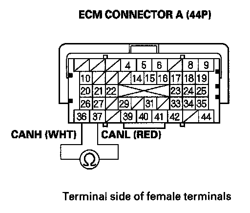
4. Measure resistance between ECM connector terminals A36 and A37.
Is there about 95- 116 ohms (with ABS system) or 91-111 ohms (with VSA system)?
YES - Go to step 40.
NO - Go to step 5.
5. Disconnect the gauge control module (tach) 36P connector.
6. Disconnect the ABS modulator-control unit 25P connector (or the VSA modulator control unit 37P connector and the yaw rate/lateral acceleration sensor 4P connector).
7. Disconnect the SRS unit 28P connector.
8. Disconnect EPS control unit connector D (28P).
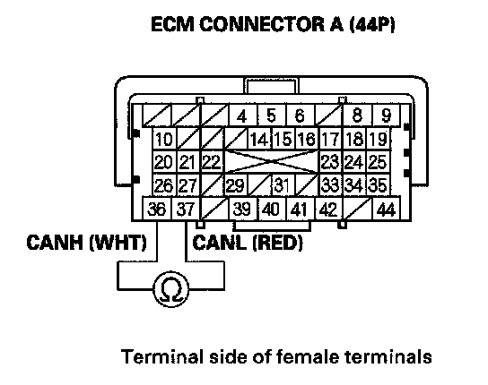
9. Check for continuity between ECM connector terminals A36 and A37*.
Is there continuity?
YES - Repair short in the wires between ECM connector terminals A36 and A37.
NO - Go to step 10.
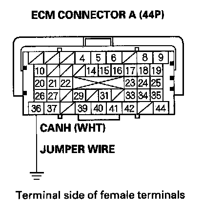
10. Connect ECM connector terminal A36 to body ground with a jumper wire.
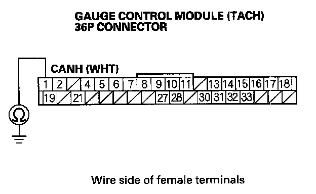
11. Check for continuity between gauge control module (tach) 36P connector terminal No.1 and body ground.
Is there continuity?
YES
- With ABS system: Go to step 12.
- With VSA system: Go to step 13.
NO - Repair open in the wire between the ECM (A36) and the gauge control module (tach).
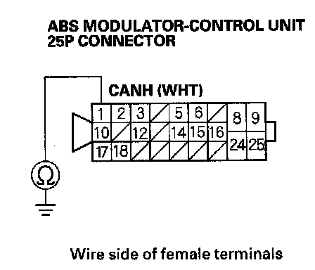
12. Check for continuity between ABS modulator-control unit 25P connector terminal No.1 and body ground.
Is there continuity?
YES - Go to step 15.
NO - Repair open in the wire between the ECM (A36) and the ABS modulator-control unit.
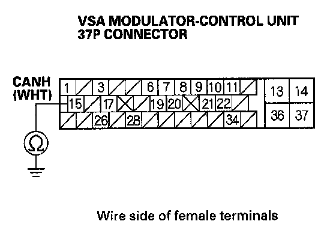
13. Check for continuity between VSA modulator-control unit 37P connector terminal No.15 and body ground.
Is there continuity?
YES - Go to step 14.
NO - Repair open in the wire between the ECM (A36) and the VSA modulator-control unit.
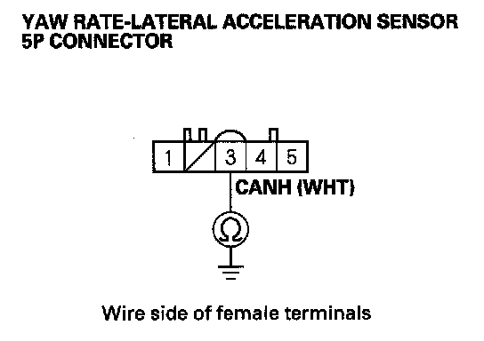
14. Check for continuity between yaw rate-lateral acceleration sensor 5P connector terminal No.3 and body ground.
Is there continuity?
YES - Go to step 15.
NO - Repair open in the wire between the ECM (A36) and the yaw rate-lateral acceleration sensor.
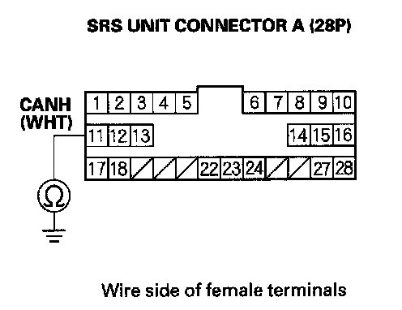
15. Check for continuity between SRS unit connector A (28P) terminal No.11 and body ground.
Is there continuity?
YES - Go to step 16.
NO - Repair open in the wire between the ECM (A36) and the SRS unit.
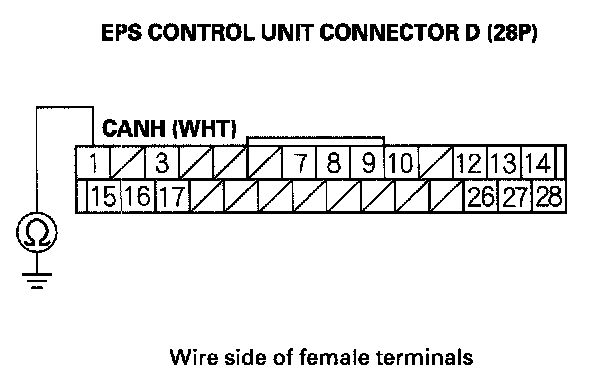
16. Check for continuity between EPS control unit connector D (28P) terminal No.1 and body ground.
Is there continuity?
YES - Go to step 17.
NO - Repair open in the wire between the ECM (A36) and the EPS control unit.
17. Remove the jumper wire from ECM connector A (44P).
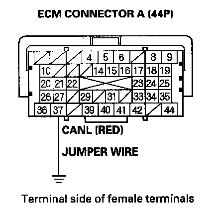
18. Connect ECM connector terminal A37 to body ground with a jumper wire.
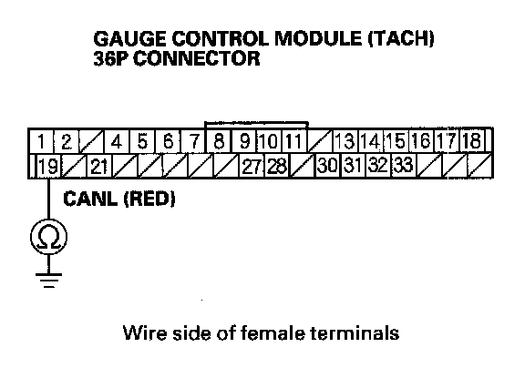
19. Check for continuity between gauge control module (tach) 36P connector terminal No.19 and body ground.
Is there continuity?
YES
- With ABS system: Go to step 20.
- With VSA system: Go to step 21.
NO - Repair open in the wire between the ECM (A37) and the gauge control module (tach).
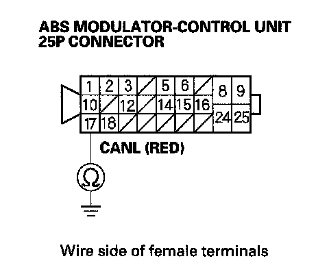
20. Check for continuity between ABS modulator-control unit 25P connector terminal No.17 and body ground.
Is there continuity?
YES - Go to step 23.
NO - Repair open in the wire between the ECM (A37) and the ABS modulator-control unit.
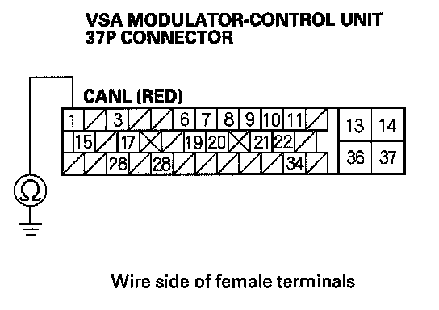
21. Check for continuity between VSA modulator-control unit 37P connector terminal No.1 and body ground.
Is there continuity?
YES - Go to step 22.
NO - Repair open in the wire between the ECM (A37) and the VSA modulator-control unit.
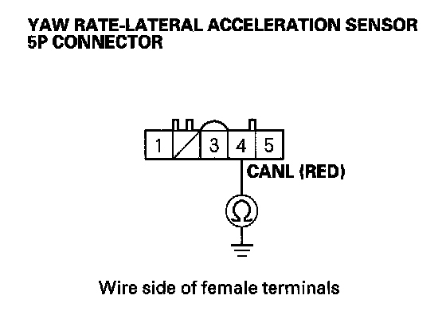
22. Check for continuity between yaw rate-lateral acceleration sensor 5P connector terminal No.4 and body ground.
Is there continuity?
YES - Go to step 23.
NO - Repair open in the wire between the ECM (A37) and the yaw rate-lateral acceleration sensor.
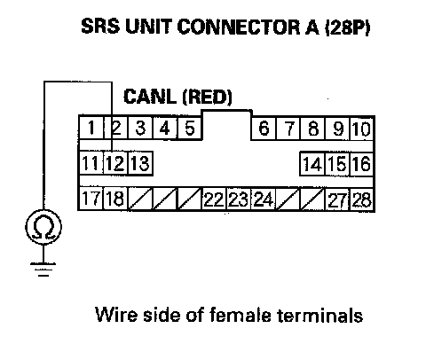
23. Check for continuity between SRS unit connector A (28P) terminal No.12 and body ground.
Is there continuity?
YES - Go to step 24.
NO - Repair open in the wire between the ECM (A37) and the SRS unit.
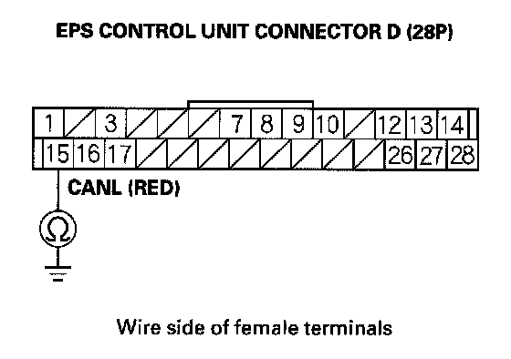
24. Check for continuity between EPS control unit connector D (28P) terminal No.15 and body ground.
Is there continuity?
YES - Go to step 25.
NO - Repair open in the wire between the ECM (A37) and the EPS control unit.
25. Reconnect the gauge control module (tach) 36P connector.
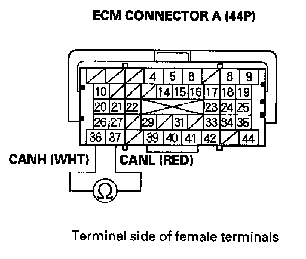
26. Measure resistance between ECM connector terminals A36 and A37.
Is there about 108-132 ohms?
YES
- With ABS system: Go to step 27.
- With VSA system: Go to step 30.
NO - Substitute a known-good gauge control module (tach). If the HDS communicate identify the vehicle, replace the original gauge control module (tach).
27. Disconnect the gauge control module (tach) 36P connector.
28. Reconnect the ABS modulator-control unit 25P connector.
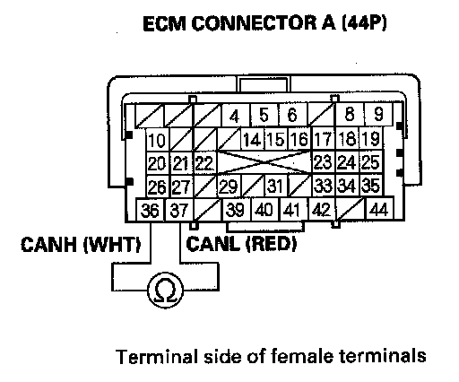
29. Measure resistance between ECM connector terminals A36 and A37.
Is there about 2.34-2.86 kohms?
YES - Go to step 36.
NO - Substitute a known-good ABS modulator-control unit. If the HDS identify the vehicle, replace the original ABS modulator-control unit.
30. Disconnect the gauge control module (tach) 36P connector.
31. Reconnect the VSA modulator-control unit 37P connector.
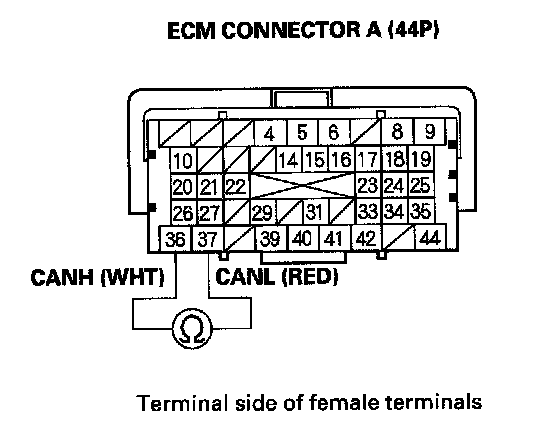
32. Measure resistance between ECM connector terminals A36 and A37.
Is there about 2.34-2.86 kohms?
YES - Go to step 33.
NO - Substitute a known-good VSA modulator-control unit. If the HDS identify the vehicle, replace the original VSA modulator-control unit.
33. Disconnect the VSA modulator-control unit 37P connector.
34. Reconnect the yaw rate/lateral acceleration sensor 5P connector.
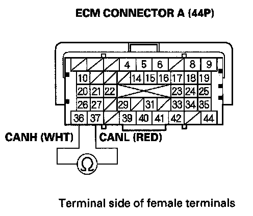
35. Measure resistance between ECM connector terminals A36 and A37.
Is there about 2.34-2.86 kohms?
YES - Go to step 36.
NO - Substitute a known-good yaw rate/lateral acceleration sensor. If the HDS identify the vehicle, replace the original yaw rate/ lateral acceleration sensor.
36. Disconnect ABS modulator-control unit 25P connector (or the yaw rate/lateral acceleration sensor 5P connector).
37. Reconnect the SRS unit connector A (28P).
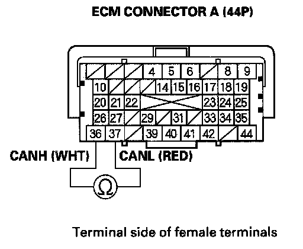
38. Measure resistance between ECM connector terminals A36 and A37.
Is there about 2.34-2.86 kohms?
YES - Go to step 39.
NO - Substitute a known-good SRS unit. If the HDS identify the vehicle, replace the original SRS unit.
39. Disconnect SRS unit connector A (28P).
40. Reconnect EPS control unit connector D (28P).
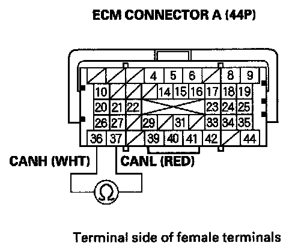
41. Measure resistance between ECM connector terminals A36 and A37.
Is there about 2.34-2.86 kohms?
YES - Update the ECM if it does not have the latest software, or substitute a known-good ECM, then recheck. If the symptom/indication goes away with a known-good ECM, replace the original ECM.
NO - Substitute a known-good EPS control unit. If the HDS identify the vehicle, replace the original EPS control unit.
42. Disconnect the gauge control module (tach) 36P connector.
43. Disconnect the ABS modulator-control unit 25P connector (or the VSA modulator-control unit 37P connector and the yaw rate/lateral acceleration sensor 5P connector).
44. Disconnect SRS unit connector A (28P).
45. Disconnect EPS control unit connector D (28P).
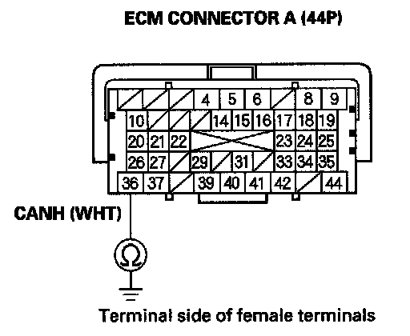
46. Check for continuity between ECM connector terminal A36 and body ground.
Is there continuity?
YES - Repair short in the wire between the ECM connector terminal A36 and the gauge control module, the ABS modulator-control unit, the VSA modulator-control unit, the yaw rate/lateral acceleration sensor, the SRS unit, the EPS control unit or the DLC.
NO - Go to step 47.
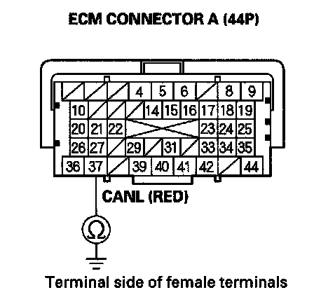
47. Check for continuity between ECM connector terminal A37 and body ground.
Is there continuity?
YES - Repair short in the wire between ECM connector terminal A37 and the gauge control module, the ABS modulator-control unit, the VSA modulator-control unit, the yaw rate/lateral acceleration sensor, the SRS unit, the EPS control unit or the DLC.
NO - Go to step 48.
48. Reconnect all connectors.
49. Connect the HDS to the DLC.
50. Disconnect the gauge control module (tach) 36P connector.
51. Turn the ignition switch ON (II), and read the HDS.
Does the HDS identify the vehicle?
YES - Replace the gauge control module (tach).
NO
- With ABS system: Go to step 52.
- With VSA system: Go to step 56.
52. Turn the ignition switch OFF.
53. Reconnect the gauge control module (tach) 36P connector.
54. Disconnect the ABS modulator-control unit 25P connector.
55. Turn the ignition switch ON (II), and read the HDS.
Does DTC HDS identify the vehicle?
YES - Replace the ABS modulator-control unit.
NO - Go to step 64.
56. Turn the ignition switch OFF.
57. Reconnect the gauge control module (tach) 36P connector.
58. Disconnect the VSA modulator-control unit 37P connector.
59. Turn the ignition switch ON (II), and read the HDS.
Does the HDS identify the vehicle?
YES - Replace the VSA modulator-control unit.
NO - Go to step 60.
60. Turn the ignition switch OFF.
61. Reconnect the VSA modulator-control unit 37P connector.
62. Disconnect the yaw rate/lateral acceleration sensor 5P connector.
63. Turn the ignition switch ON (II), and read the HDS.
Does the HDS identify the vehicle?
YES - Replace the yaw rate/lateral acceleration sensor.
NO - Go to step 64.
64. Turn the ignition switch OFF.
65. Reconnect the ABS modulator-control unit 25P connector (or yaw rate/lateral acceleration sensor 5P connector).
66. Disconnect SRS unit connector A (28P).
67. Turn the ignition switch ON (II), and read the HDS.
Does the HDS identify the vehicle?
YES - Replace the SRS unit.
NO - Go to step 68.
68. Turn the ignition switch OFF.
69. Reconnect SRS unit connector A (28P).
70. Disconnect EPS control unit connector D (28P).
71. Turn the ignition switch ON (II), and read the HDS.
Does the HDS identify the vehicle?
YES - Replace the EPS control unit.
NO - Update the ECM if it does not have the latest software, or substitute a known-good ECM), then recheck. If the symptom/indication goes away with a known-good ECM, replace the original ECM.